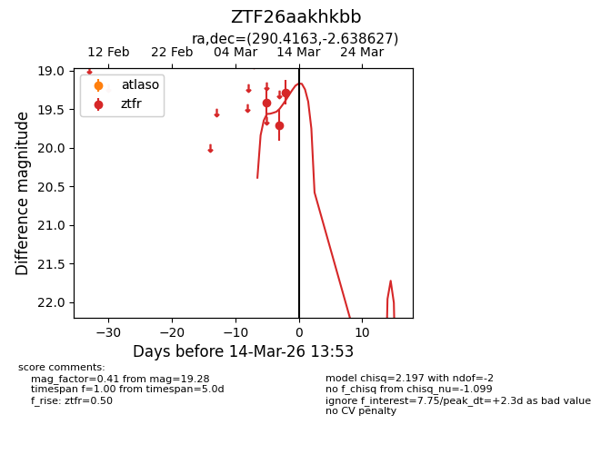
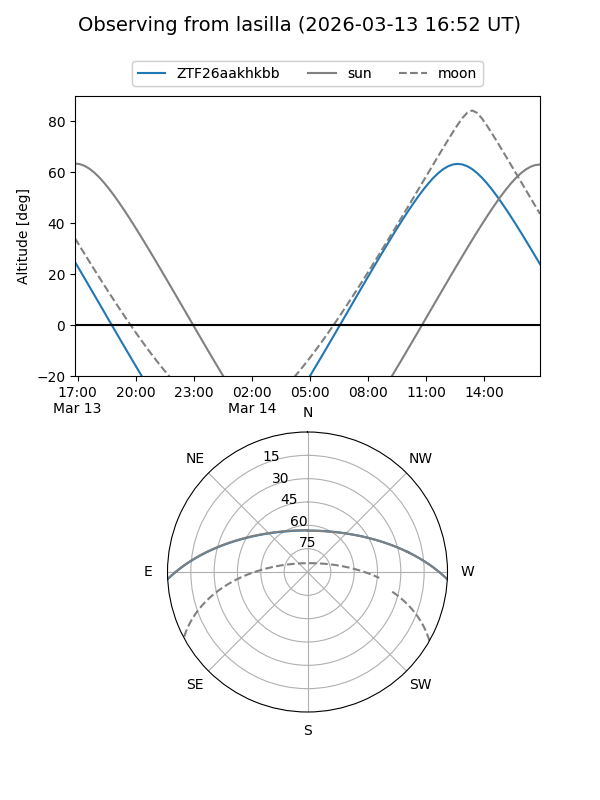
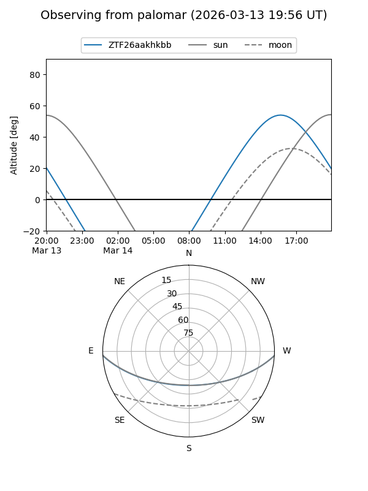
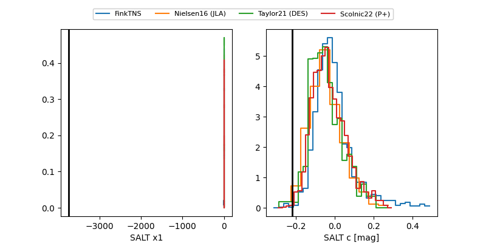

ZTF26aakhkbb
Target ZTF26aakhkbb at 2026-03-14 13:55
Aliases and brokers:
FINK: link
Lasair: link
ALeRCE: link
alt names
ZTF26aakhkbb (ztf,fink_ztf)
Coordinates:
equatorial (ra, dec) = 290.4163,-2.63863
equatorial (HMS+DMS) = 19:21:39.91,-02:38:19.06
galactic (l, b) = (34.0271,-7.92690)
Flags:
Photometry:
last ztfr=19.28
3 ztfr detections
Lightcurve

Visibility


Additional plots
